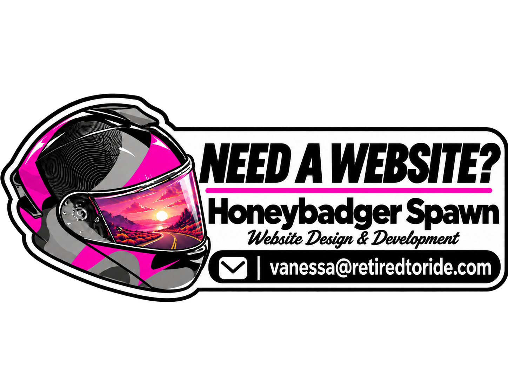

BikerDown Foundation
Support and resources for injured riders and their families, including recovery guidance, medical equipment and assistance options.
VISIT BIKERDOWN
GET IN TOUCH
Have a question, a story to share or a touring adventure to tell us about? We'd love to hear from you.
THREE WAYS TO CONNECT ↓THE RETIRED TO RIDE COMMUNITY
Retired to Ride is built around motorcycle adventures, friendship and the stories we collect along the way.
Whether you have been following Jonathan and Brenda for years or have just discovered the community, you're always welcome to join us for the ride.
EVERY RIDER HAS A STORY
The roads we travel, the places we discover and the people we meet all become part of the journey.
Whether you've completed an unforgettable tour, discovered a road we should ride or simply have a story from life on two wheels, we'd love to hear it.
SHARE YOUR STORYTHE RETIRED TO RIDE COMMUNITY
No Rider Rides Alone
The motorcycle community is built on friendship, connection and looking out for one another. When life takes an unexpected turn, knowing where to find support can make a difference.
Retired to Ride is a personal motorcycle touring and adventure platform, not a charity or fundraising organisation. While we welcome stories from fellow riders, we're unable to offer financial assistance, sponsorship or promotion of individual fundraising campaigns.
If you or someone you know needs help following a motorcycle accident or other difficult circumstances, the independent organisations below may be a good place to start.
Support and resources for injured riders and their families, including recovery guidance, medical equipment and assistance options.
VISIT BIKERDOWNReviews requests from riders and families facing serious hardship after a catastrophic motorcycle accident.
REQUEST SUPPORTOffers applications for practical and financial support to riders and families affected by motorcycle accidents.
EXPLORE ASSISTANCEInformation and guidance to help disabled riders enjoy motorcycling. Check its website for the current status of adaptation grants.
VISIT NABDThese organisations are independent of Retired to Ride. We do not process applications or donations, and inclusion does not imply endorsement or guarantee assistance. Please contact each organisation directly.
Different roads. One riding community.

If you love the look and feel of Retired to Ride, I can create a clean, modern website for your own project, business or brand.
Whether you're a rider, creator, club, small business or passion project, Honeybadger Spawn can help bring your website to life.
ENQUIRE ABOUT A WEBSITE